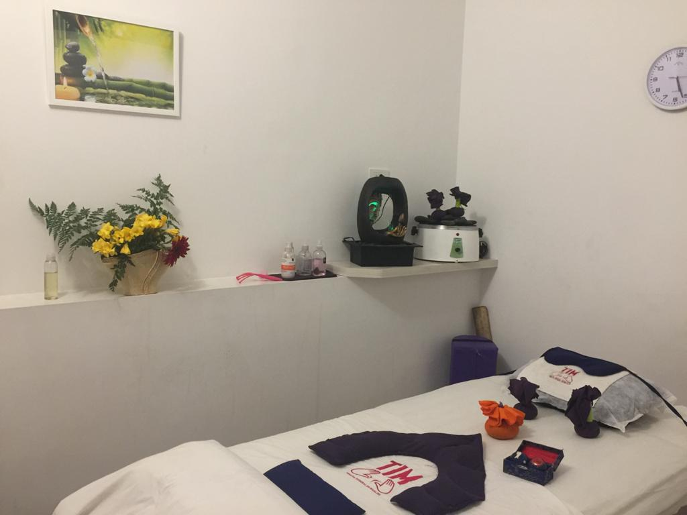

En Terapia Integral de Masajes (TIM) nos dedicamos exclusivamente al bienestar físico y emocional a través de una amplia variedad de terapias. Con más de 8 años de trayectoria, nos hemos consolidado como un centro de referencia en masajes profesionales en Recoleta.
Creemos que cuidar el cuerpo es esencial para una vida plena. Por eso, contamos con un equipo de terapeutas altamente capacitados y comprometidos con ofrecer una experiencia personalizada y de calidad. Para nosotros, la salud es la base del bienestar diario, y lo reflejamos en cada sesión.
Gracias al cariño y la confianza de nuestros clientes, hemos experimentado un crecimiento constante y sostenido. ¡Su apoyo es lo que nos impulsa a seguir mejorando cada día!
A pesar de los desafíos que trajo la pandemia, TIM se mantuvo en pie gracias al respaldo incondicional de quienes nos eligen año tras año. Estos años nos fortalecieron como equipo y como espacio de contención.
Abrimos nuestras puertas en septiembre de 2017, en Ayacucho 1250, Recoleta. Desde entonces, cientos de personas han confiado en nosotros para mejorar su calidad de vida a través del poder del masaje terapéutico.
"Una garantía de bienestar físico y emocional"
Esta frase resume nuestro compromiso diario con cada persona que cruza nuestra puerta.
¡Increíble el lugar, súper recomendable! Las terapeutas, un amor todas. Volveré sin dudarlo. Muchísimas gracias.